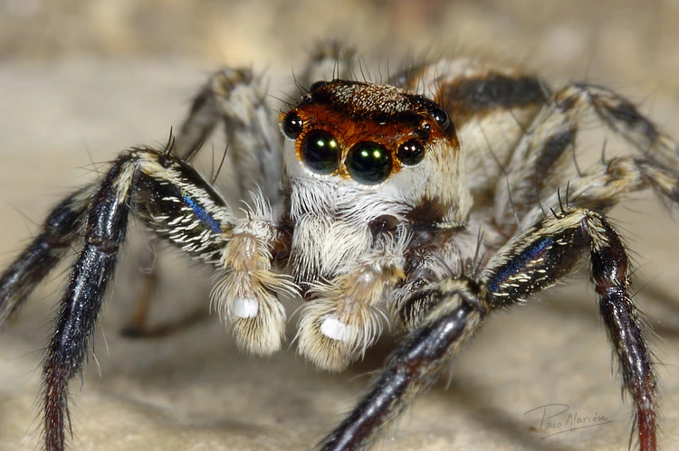
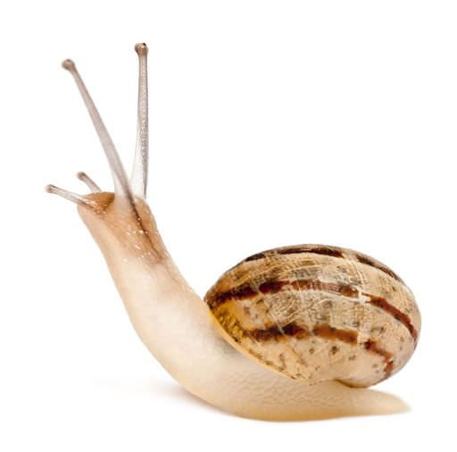
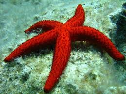
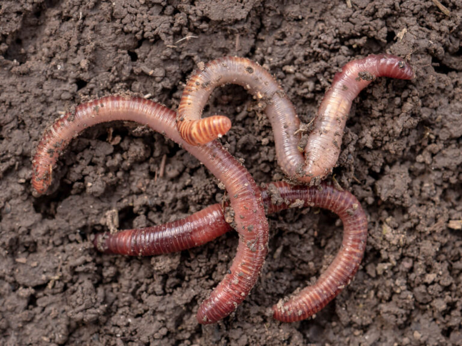

Artrópodos
Tienen patas articuladas y un cuerpo cubierto por un exoesqueleto. Incluye insectos, arañas y crustáceos.
Los invertebrados son animales que no tienen columna vertebral ni esqueleto interno articulado. Representan más del 95% de todas las especies animales.

Tienen patas articuladas y un cuerpo cubierto por un exoesqueleto. Incluye insectos, arañas y crustáceos.

Animales de cuerpo blando, muchos protegidos por una concha, como caracoles, pulpos y almejas.

Viven exclusivamente en el mar, tienen piel espinosa y simetría radial, como las estrellas de mar.

De cuerpo alargado y blando. Pueden ser anélidos (lombrices), platelmintos o nemátodos.

Animales acuáticos simples como medusas y corales, que poseen tentáculos con células urticantes.
A diferencia de los vertebrados, los invertebrados han colonizado casi todos los ambientes del planeta, desde las profundidades marinas hasta las cumbres más altas, gracias a su increíble capacidad de adaptación.
La característica definitoria de este grupo es la ausencia de columna vertebral y de un esqueleto interno óseo. En su lugar, muchos han desarrollado ingeniosas protecciones externas como conchas calcáreas o exoesqueletos de quitina que deben mudar para crecer.
Su papel en la naturaleza es fundamental. Son los principales polinizadores de los cultivos del mundo, ayudan a descomponer la materia orgánica enriqueciendo el suelo y son la base de la dieta de innumerables especies marinas y terrestres.
Este grupo destaca por su asombrosa biodiversidad: desde esponjas marinas y corales hasta complejos pulpos e insectos. Representan un éxito evolutivo sin precedentes, ocupando nichos ecológicos inaccesibles para otros animales.